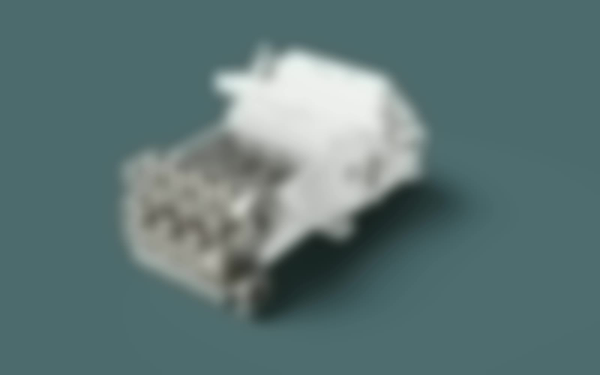
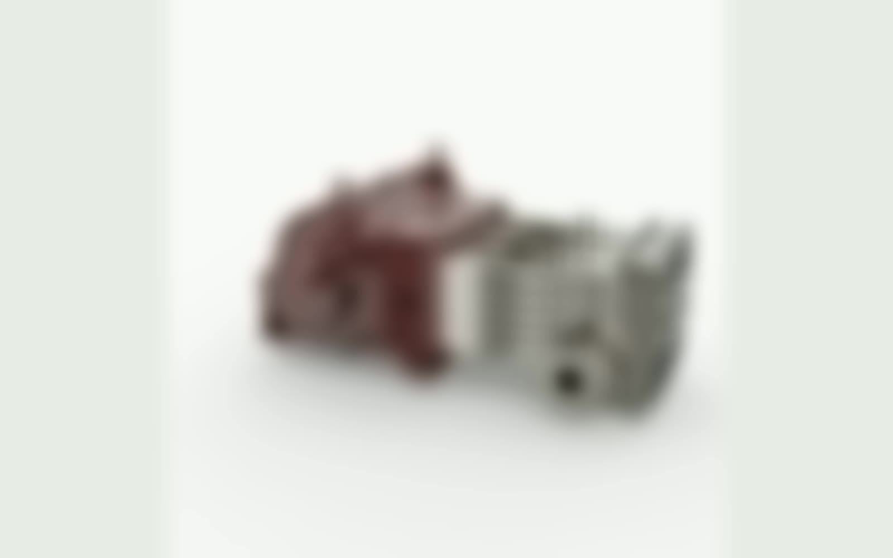
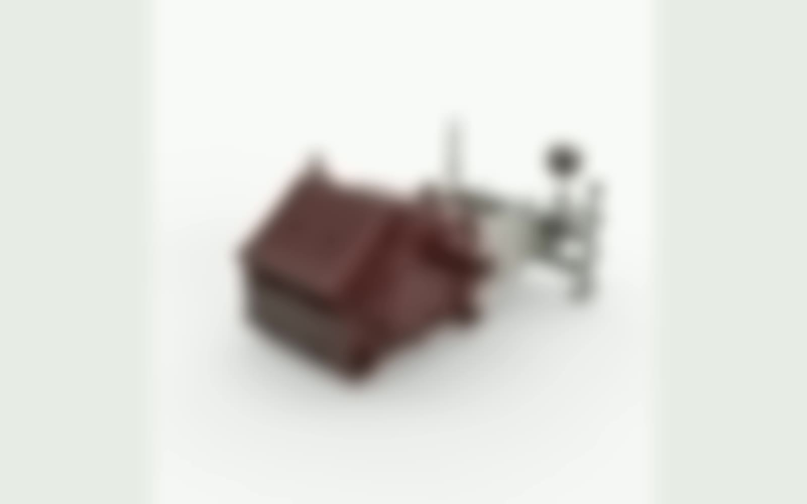
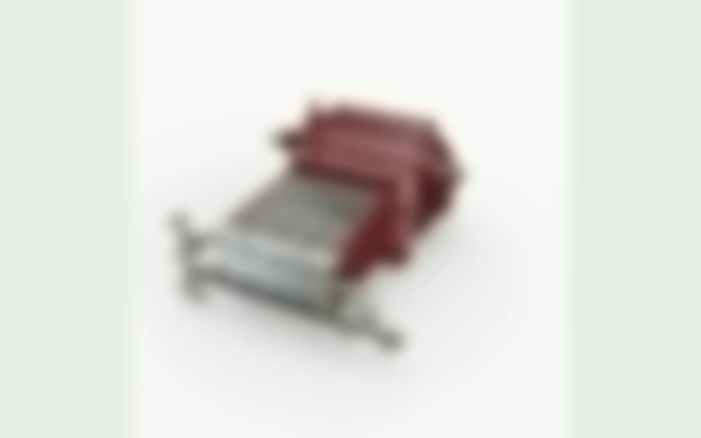

Professional Industrial Design / Engineering-led Optimization
Industrial Pump Design Optimization
Refining customer-facing pump components within real engineering and production constraints.
Across several professional pump programmes, I collaborated with engineering teams to improve external components and product-family coherence while preserving mechanical interfaces, assembly logic, manufacturing feasibility, and product performance.
- Design scope
- External components and product-family refinement
- Collaboration
- Engineering-led iteration within existing architecture
- Industrial value
- Visual consistency and customer-facing product quality

Protected professional work / NDASelected Component Studies
Design refinement inside an established engineering system.
The published view is intentionally limited, but the project scope shows how visual decisions were balanced against interfaces, assembly, manufacturing, and family consistency.
Only permanently obscured static previews are published. Original videos, source CAD, specifications, and proprietary details remain offline.



